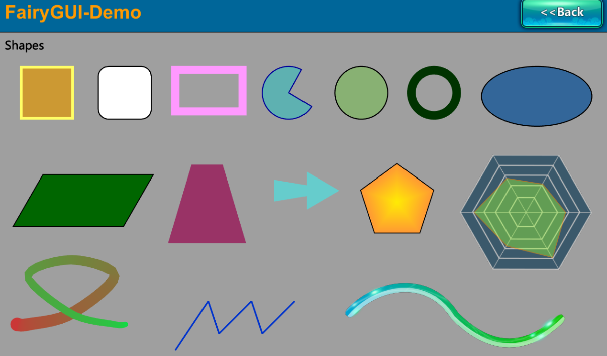

Unity SDK更新日志
3.4.0
- 增加了对多显示器的支持。
- 增加了DynamicFont(name, font),可以自行传入由ab载入的字体。
- 修正了动效里Hook可能被调用两次的bug。
- 修正了在手机上，字距错误的增加了一个像素的bug。
- 修正了对象销毁在后，RemovePackage在前会引发异常的bug。
- 修正了高级组、列表在应用自动大小布局时，由于浮点数误差造成的大小不均匀问题。
- 修正了对象销毁时如果属性控制有缓动，没有停止的bug。
- 修正了Unity2018.3下的警告。
3.3.0
- 现在多行文本也支持自动缩小。
- 文本增加了对宽度限制的支持，这意味着创建一个自动宽高，但又可以在一定宽度后自动折行的文本成为可能。Demo Emoji已经修改为使用这这一特性。
- Transition里的各个分段效果播放完毕后不再自动调用invalidateBatchingState，而是统一使用Transition.invalidateBatchingEveryFrame这个标志。
- 增加机制消除了动效启动时可能由于卡帧导致动效开头被跳过的问题。
- 现在GTween会在目标对象（SetTarget设置的）销毁后自动销毁。
- 增加了UIPackage.dependencies，可以获得一个UI包依赖了哪些其它的包。
- 在鼠标或手指按下后移动一段位置再回到当初按下的位置，不再判定为Click事件。
- 对于没有设置为滚动的列表，不再在TouchBegin时设置选中状态，而是统一为点击事件，避免了单选按钮被选中但不触发onClickItem。
- 优化了事件系统，降低了UI构建时的GC开销。
- 优化了Lua支持，注意FairyGUI.lua有修改，而LuaUIHelper.cs这个类已经不再需要。内置了对tolua的支持，详情参考LuaSupport。
- UIConfig.enhancedTextOutlineEffect默认值改成了false。因为如果使用8方向的描边实现，很小段的文字都会产生大量三角形，所有默认还是保守的设置好。
- GTween.catchCallbackExceptions和Timers.catchCallbackExceptions默认值都改成false，避免新手遇到异常不知道怎么解决。
- 增加了UIConfig.richTextRowVerticalAlign控制图文混排时图片和文字的垂直对齐方式。默认值为Bottom，也就是图片也文字的底部对齐。但旧版本默认是中线对齐的。
- GTween增加了路径支持，增加了GPath，可以设置曲线和折线运动。（新版本FairyGUI编辑器将提供可视化设计支持）
- 修正了在手机上键盘失去焦点时输入文本没有FocusOut的bug。
- 修改了带引号的文本折行处理不正确的bug。
- 修改了阿拉伯文字显示的一些bug。
- 优化了GProgress.TweenValue，在连续调用时仍能平滑过渡。
重构了底层图形系统，现在可以更方便的创建各种形状，例如饼型，线条，多边形，正多边形，雷达图等，可以更方便的操纵网格实现形变。同时，显著降低了UI界面改变时的GC开销。Demo Basics->Graph 已更新，反映这些新特性。请注意更新着色器。
如果将图片变形为任意多边形，会由于线性插值的原因造成图片的畸变，现在底层会自动对UV进行特殊设置解决。例如如果在旧版本，将组件设置为透视模拟，再旋转x轴或者y轴，可能会发生显示内容畸变，新版本则能正确显示。（需要Unity 5.2或更新版本才支持）
- FairyGUI-Text-Brighter.shader已经移除，不再提供这种特殊的效果，因为Unity对文字的渲染效果也在不断改进，还是保持原样的Unity效果好。这个只影响PC，因为移动平台上从来没有使用过这个着色器。
- 增加了一个翻书效果的Demo: TurnPage，提供了一个可扩展性很强，支持封面封底，支持硬页软页，使用虚拟化技术的翻页效果。

3.2.0
- 增加了一个Unity组件DisplayObjectInfo，可以在Inspector下查看和修改GameObject对应的UI节点的信息。支持了网易的UI自动化测试工具AirTest。但默认不挂这个新组件，要启用这个功能，在Scripting Define Symbols里添加FAIRYGUI_TEST。
3.1.0
- 改进了文字描边由原来的4次叠加增加到8次叠加，效果更好。但可以通过设置UIConfig.enhancedTextOutlineEffect=false强制为原来的4次叠加效果。
- 优化了Update里的逻辑，CPU消耗最大可减少30%。
- GoWrapper现在支持一个网格渲染器内多个材质。
- 手机上输入文本激活时，调整光标到最后。
- 消除了ColorFilter调整参数时产生的GC。
- 修正了设置GLoader.texture=null时显示不正确的bug。
- 调整着色器，修正了在Unity5.4版本错误的激活了线性空间颜色相关逻辑的bug。
- 修正了PC上无法粘贴多行文本到输入框的bug。
- 修正了RemovePackage里有关资源释放的一个bug。
- 修正APtitleFontSize实现的bug。
- 修正了GTween在duration=0时工作不正确的bug。
3.0.0
- 提供二进制格式的支持。
2.4.0
- 增加了内置的Tween库，不再依赖DOTween。使用了新的Tween库后，原来GObject.TweenXXX方法返回的不再是DOTween的Tweener对象，而是GTweener对象。如果你有使用TweenXXX系列函数，并且有使用返回的对象，那么需要小心的处理，特别是在Lua中调用。GTweener与DOTween.Tweener的常用API基本一致，回调注册函数也一致，重要差异在于SetEase方法，即GTweener.SetEase。建议全局搜索SetEase，参数修改为FairyGUI的EaseType.XXXX。
- 动效现在可以暂停：Transition.setPaused(true);
- 动效现在可以播放其中一部分，在Play方法中传入startTime和endTime参数，单位为秒。可以通过GetLabelTime的方式获得编辑器中某个关键帧的时间。
- 现在在游戏暂停再返回后，动效播放不会再出现混乱的情况。
2.3.0
- 修正了文本变灰颜色不正确的问题(注意是着色器的修改）。
- 修正了UIPanel设置了锚点，且HiTest设置为Raycast后，碰撞体位置不正确的bug。
2.2.0
- 增加了对线性颜色空间的支持。
- 消除了动效播放过程中可能产生的GC。
- 修正了Blend Mode为Multiply或者Screen时，显示不正确的bug。
- 修正了UIPackage里延时卸载AB的bug。
- 修正了滚动容器的虚化边缘没有在边缘回弹时显示的bug。
- 修正了显示对象修改visible属性时，可能出现fairyBatching不正确的bug。
- 修正了当文本宽度为0，仍然显示1个字符的bug。
2.1.0
- 现在支持图形中的圆角。
- 修正了共享材质系统中的一个bug。
2.0.0
- 增加了对阿拉伯语言显示的支持。如果需要打开此功能，使用源码版本的，需要在UnitPlayer Settings的Scripting Define Symbols里增加RTL_TEXT_SUPPORT；使用DLL版本的，请自行编译包含这个功能的DLL，或者向谷主索取。
- 增加了UIConfig.depthSupportForPaitingMode.如果你要对使用了自定义遮罩的组件进行设置倾斜、设置BlendMode，设置滤镜，又或者曲面UI中含有自定义遮罩的组件时，需要设置这个开关为true才能显示正常。
- 修正了轴心不为中心或左上角时，倾斜显示不正确的bug。
1.9.3
- 如果UIPackage.AddPackage方法用于AssetBundle，现在增加了一个参数unloadBundleAfterLoaded，可以控制是否由FairyGUI释放AB。默认是true（和旧版本行为一致）。
- 修正了触摸输入处理的一个bug。
- 修正了1.9.2办法引入的一个bug，可能导致窗口无法拖动。
1.9.2
- 修正了如果UIPanel中有使用倾斜功能。则在编辑模式会报错的bug。
- 修正了如果位图字体有重名时报错的bug。
- 增加了onTouchMove事件。调用context.CaptureTouch后，对象可以收到这个事件（无论鼠标是否在对象上），直到touchEnd。
- 改进了GoWrapper，现在会复制对象的材质，避免造成原始材质的变化。
- 修正了有时当对象销毁后，自动合批出现不正确的bug。
- 增加了对HTML语法的支持，支持设置图片的宽度或高度为百分比，例如width=’50%’ height=’50%’。
- 增加了GTextInput.SetSelection，可以选定输入框中的文字。
- 修正了滚动容器关闭滚动惯性后，item贴近或分页滚动没有正确处理的bug。
1.9.0
- 移动平台现在也支持RollOver和RollOut事件了。
- GoWrapper现在可以包装UGUI的Canvas，实现FairyGUI中嵌入UGUI的需求。使用方法
- 如果手势是全屏的，也就是没有具体对象的，现在可以直接建立在GRoot上。使用方法
- 修正了部分输入法，以及在Mac下无法输入中文的bug。
- 修正了字体贴图重建时，没有销毁材质，可能造成内存泄漏的bug。
- GoWapper增加了对sharedMaterial是否为空的判断。
- 如果使用源码版本，不再为移动平台屏蔽OnGUI函数，这会造成不响应按键事件。
- Stage.touchScreen不再只读，现在可以手工改变。
- 对于设置为使用Raycast进行点击测试的UIPanel，现在你可以使用HitTestContext.layerMask排除掉一些不关心的层。